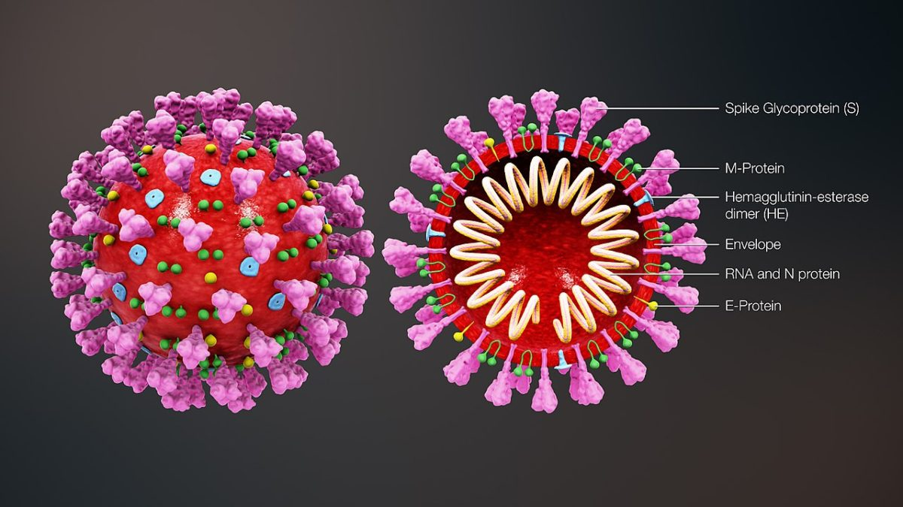

Vision
TODO
Research Projects
Personalized Crowdsourcing
TODO
Resource Allocation in Fog-Enabled 5G Networks
TODO
Fairness in Black-Box Classifier

With the advancements of algorithmic decision making, biases and unfair treatment have also increased which affects human lives significantly. Many fair notions have been introduced in the past few years in order to eliminate the biases. But, these notions of fairness do not satisfy individual preferences and does not meet the expectations of society. We introduce a new notion of fairness called subjective fairness where a trusted auditor evaluates the efficiency of a classifier by employing an arbitrary fairness rule. We also design a post-processing approach to improve subjective fairness using a randomization scheme over the outputs and prove that, the probability of improving fairness is independent of the randomization scheme.
COVID-19 Dashboard - Chest X-ray Testing and Interventions

The novel coronavirus, COVID-19, is an infectious disease which was first identified in December 2019 in Wuhan and has spread world wide significantly making it a pandemic. In order to understand and stop the spread of COVID-19, various countries have introduced different ways of testing. We developed a cost-efficient and high-accuracy testing tool for COVID-19 by analyzing the patient's Chest X-rays and CT-scans. We designed a dashboard to upload the X-ray and CT-scan images inorder to get the test results. Along with the X-ray images, the tool also displays the PSI and CURB-65 scores. The PSI (Pneumonia Severity Index) score calculates the probability of mortality of patients and is often used to predict the need for hospitalization in people with pneumonia. The CURB-65 is also a similar score but it is easy to compute.
Miner Self Escape

Commodo ullamcorper a lacus vestibulum sed arcu non. Neque aliquam vestibulum morbi blandit cursus risus at ultrices mi. Commodo ullamcorper a lacus vestibulum sed arcu non. Neque aliquam vestibulum morbi blandit cursus risus at ultrices mi. Commodo ullamcorper a lacus vestibulum sed arcu non. Neque aliquam vestibulum morbi blandit cursus risus at ultrices mi. Commodo ullamcorper a lacus vestibulum sed arcu non. Neque aliquam vestibulum morbi blandit cursus risus at ultrices mi. Commodo ullamcorper a lacus vestibulum sed arcu non. Neque aliquam vestibulum morbi blandit cursus risus at ultrices mi.
Blockchain Mining
Commodo ullamcorper a lacus vestibulum sed arcu non. Neque aliquam vestibulum morbi blandit cursus risus at ultrices mi. Commodo ullamcorper a lacus vestibulum sed arcu non. Neque aliquam vestibulum morbi blandit cursus risus at ultrices mi. Commodo ullamcorper a lacus vestibulum sed arcu non. Neque aliquam vestibulum morbi blandit cursus risus at ultrices mi. Commodo ullamcorper a lacus vestibulum sed arcu non. Neque aliquam vestibulum morbi blandit cursus risus at ultrices mi. Commodo ullamcorper a lacus vestibulum sed arcu non. Neque aliquam vestibulum morbi blandit cursus risus at ultrices mi.